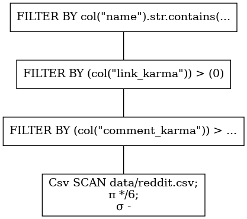
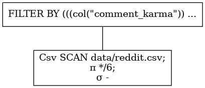
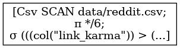

谓词下推
谓词下推是Polars所做的优化，可以减少查询时间和内存使用。谓词是数据库行话，用于在某个表上应用过滤器，从而减少该表上的行数。
那么，让我们看看是否可以加载一些Reddit数据并对几个谓词进行过滤。
import polars as pl
from ..paths import DATA_DIR
q1 = (
pl.scan_csv(f"{DATA_DIR}/reddit.csv")
.filter(pl.col("comment_karma") > 0) # 谓词过滤
.filter(pl.col("link_karma") > 0)
.filter(pl.col("name").str.contains(r"^a")) # filter name that start with an "a"
)
如果我们在上面运行这个查询，什么都不会发生！这是由于懒惰的评估。 除非特别要求，否则不会发生任何事情。这使Polars能够看到查询的整个上下文，并及时优化以执行。
.collect方法请求执行。这将查询所有可用数据。
在编写、优化和检查查询时，这通常是不可取的。另一个调用执行的方法是.fetch方法。.fetch接受一个参数n_rows，并尝试在数据源上'获取'该数量的行（尽管没有给出任何保证）。
因此，让我们从源文件中“获取”约1000万行，并应用谓词。
q1.fetch(n_rows=int(1e7))
shape: (656, 6)
┌─────────┬─────────────┬─────────────┬────────────┬───────────────┬────────────┐
│ id ┆ name ┆ created_utc ┆ updated_on ┆ comment_karma ┆ link_karma │
│ --- ┆ --- ┆ --- ┆ --- ┆ --- ┆ --- │
│ i64 ┆ str ┆ i64 ┆ i64 ┆ i64 ┆ i64 │
╞═════════╪═════════════╪═════════════╪════════════╪═══════════════╪════════════╡
│ 77860 ┆ aquarin ┆ 1137474000 ┆ 1536528294 ┆ 150 ┆ 11 │
│ 77974 ┆ aadvaark ┆ 1137301200 ┆ 1536528294 ┆ 26 ┆ 47 │
│ 78004 ┆ apoisel ┆ 1137301200 ┆ 1536497404 ┆ 42 ┆ 2549 │
│ 78041 ┆ aonic ┆ 1137301200 ┆ 1536497404 ┆ 2931 ┆ 2095 │
│ … ┆ … ┆ … ┆ … ┆ … ┆ … │
│ 1192656 ┆ atothedrian ┆ 1162785880 ┆ 1536497412 ┆ 748 ┆ 585 │
│ 1204607 ┆ akbusiness ┆ 1162899425 ┆ 1536532995 ┆ 73 ┆ 512 │
│ 1214809 ┆ aaminics ┆ 1162969322 ┆ 1536533034 ┆ 22 ┆ 6 │
│ 1225341 ┆ antonulrich ┆ 1163110623 ┆ 1536497412 ┆ 9304 ┆ 1782 │
└─────────┴─────────────┴─────────────┴────────────┴───────────────┴────────────┘
上面我们看到，从1000万行中，61503行匹配我们的谓词。
分解
在Polars中，我们可以可视化查询计划。我们来看看。
q1.show_graph(optimized=False)

精明的读者可能会注意到，我们的查询不是很理想，因为我们有三个独立的FILTER节点。这意味着在每一个过滤器分配一个新的DataFrame，它将被输入到下一个过滤器中，然后从内存中删除--这一定是多余的，你知道吗... 他们是对的。谓词应该组合在一起。我们应该写下这个问题：
import polars as pl
from ..paths import DATA_DIR
q2 = pl.scan_csv(f"{DATA_DIR}/reddit.csv").filter(
(pl.col("comment_karma") > 0) & (pl.col("link_karma") > 0) & (pl.col("name").str.contains(r"^a"))
)
这将转化为：
q2.show_graph(optimized=False)

正如我们所见，谓词是组合在一起的。这将减少数据的复制。
优化随之而来
Polars试图从查询编写器中节省这种精神开销，并为您组合谓词。除此之外，它还将谓词下推到扫描级别！让我们看看优化后的查询是什么样子。
q1.show_graph(optimized=True)

这可能很难看到，但很清楚的是，只有一个节点：CSV扫描。谓词过滤是在读取csv的过程中完成的。这意味着该查询的内存开销通过过滤因子减少了！这产生了巨大的影响。
内存
正如我们所看到的，在过滤器之后还剩下约62000行。这意味着（除了批量大小和筛选操作的一些内存开销）我们使用\(\frac{6.2\text{e-}4}{1\text{e-}7} \sim 0.6 \text{%} \)在一次急切的评估中，我们将首先读取内存中的整个表，然后再应用过滤器。
性能
在撰写本文时，谓词下推也提高了查询时间性能。
无优化, predicate_pushdown=False 标签:
real 0m2,401s
user 0m5,457s
sys 0m0,894s
有优化, predicate_pushdown=True 标签:
real 0m1,597s
user 0m6,143s
sys 0m0,647s
关系代数
在查询计划的可视化中，您会看到一个\（\sigma\）符号。这表示在扫描级别执行的谓词。还有一个\（\pi\）符号表示投影（用于列选择的数据库行话），但我们稍后将讨论这个问题。
更便捷的联结（joins）操作
谓词下推优化通常也会导致更便宜的连接。连接是一个昂贵的操作。连接操作中的行数越少，成本就越低。